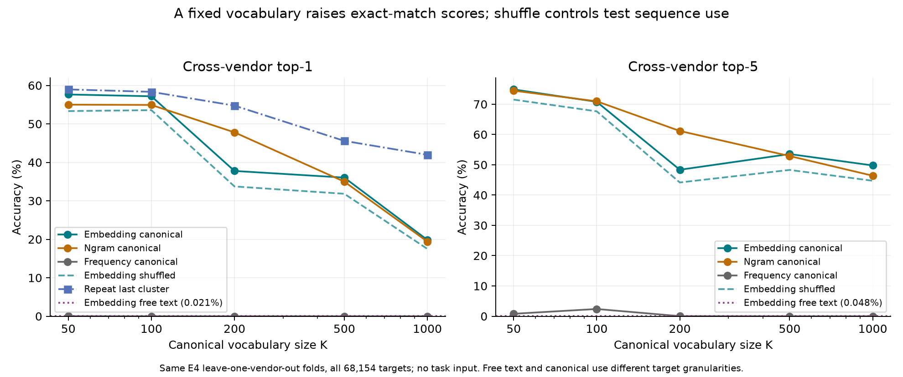

D1 · Same robot, wrong clock
Control passedSuccess rate (150 rollouts each, from E1b)
| Training data | Lift | Can |
|---|---|---|
| Clean | 93.3 % | 94.7 % |
| Observation 50 ms late | 72.0 % | – |
| 100 ms late | 41.3 % | 32.0 % |
| 200 ms late | 0.7 % | 0.0 % |
| Last 10 % cut | 94.0 % | 66.7 % |
- Only the training data changes. The robot always sees the correct state when it runs.
- "Observation late" = each image is paired with an action from earlier. On a real rig, this happens when the glove or IMU stream is stamped later than it measured.
- Each video is one example. In the Lift clip, 100 ms happens to succeed where 50 ms fails; the rates in the table are what count.
Control: the clean policy succeeds 4/4 per task; 28/28 renders reproduce E1b's outcomes exactly.
D2 · Gloved hands, two free detectors
Control passedFrames with any output (of 450)
| Clip | RTMDet | MediaPipe |
|---|---|---|
| Bare hands | 450 | 443 |
| White gloves | 449 | 280 |
| Dark gloves | 408 | 14 |
Hit rate on 118 frames I labelled
- RTMDet's boxes often sit on background objects: a "hit" is not a found hand. Its false-alarm rate is still unknown.
- RTMDet's hand weights were trained partly on FreiHand (non-commercial): research use only for now.
- The 118 frames include 40 picked where the detectors disagree, so these are not rates for normal footage.
D3 · A fixed list of work steps
Main control failed
| Free-text labels, other vendor | 0.02 % |
| Grouped into 200 steps | 37.8 % |
| "Repeat the last step" | 54.7 % |
- Grouping makes labels comparable, but repeating the last step beats the trained model. The gain comes from merging neighbouring steps, not from learning the order.
- Shuffling the step order barely hurts (control passed in 2 of 20 within-source settings and 0 of 20 across vendors).
- The largest group merges "pick up box" with "place box".
- The frequency baseline (≈ 0 %) is almost certainly a bug, so the cross-vendor numbers are not confirmed.
Lesson: write the step list by hand (verb + object + hand) and record when each step starts and ends.